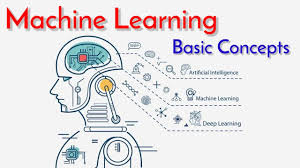

Explore CG Connect
CG Connect appears to be a bus travel service that emphasizes comfort, safety, and reasonable rates. Comfort: The service uses luxury buses, including Mercedes Benz, Volvo, and Scania models, with amenities like Wi-Fi, charging points, water bottles, central TV, and comfortable seating designed to feel like a "cosy bedroom".
Share your experience
I remember a time when I had to speak in public for the first time. My heart raced, and my hands shook as I stepped onto the stage, facing a sea of unfamiliar faces. I had prepared for days, yet the fear of failure loomed large.
Machine learning
Machine learning is a subset of artificial intelligence that enables computers to learn and improve from data without being explicitly programmed. It works by using algorithms to analyze large datasets, identify patterns, and then build models to make predictions or decisions on new data.
Phython for Machine learning
Python has become the dominant programming language for machine learning due to its exceptional blend of simplicity, flexibility, and a rich ecosystem of specialized libraries
MACHINE LEARNING TUTORIAL
Machine learning is a subset of artificial intelligence that enables computers to learn and improve from data without being explicitly programmed. It works by using algorithms to analyze large datasets, identify patterns, and then build models to make predictions or decisions on new data. Python has become the dominant programming language for machine learning due to its exceptional blend of simplicity, flexibility, and a rich ecosystem of specialized libraries
